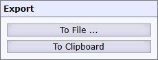
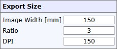
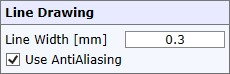
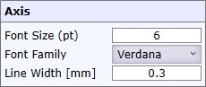
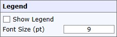
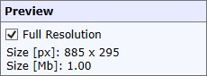
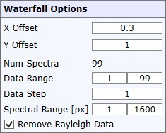

|
光谱查看器导出
|
光谱查看器 允许使用多种设置导出查看器。

到文件...
将当前视图导出到图像文件。
到剪贴板
将当前视图导出到Windows剪贴板。

图像宽度
定义图像宽度，单位为 [mm]。
这将结合DPI自动计算正确的像素大小。
比例
定义查看器的比例。
DPI
定义DPI（每英寸点数）。
这将结合图像宽度 [mm] 自动计算正确的像素大小。

线宽
定义线宽，单位为 [mm]。
使用抗锯齿
如果选中，将使用抗锯齿来平滑线条。

字体大小
定义字体大小，单位为 [pt]。
字体族
定义坐标轴刻度和标题标签中使用的字体族。
线宽
定义坐标轴和刻度的线宽。

显示图例
如果选中，查看器上会显示图例。
您可以使用鼠标左键拖放图例框。
字体大小
定义图例标题的字体大小。

全分辨率
如果选中，预览将以结果位图的全像素分辨率显示。

仅在图谱导出瀑布图模式下可见。
X/Y偏移
更改每个光谱之间的偏移量以调整瀑布图效果。
数据范围
定义在瀑布图中显示哪些光谱。
数据步长
允许跳过每第 <n> 个光谱。当数据集中光谱数量很多时，这是必要的。
光谱范围
定义在瀑布图中显示哪些光谱像素。
移除瑞利数据
如果选中，瑞利区域将自动从数据中移除。